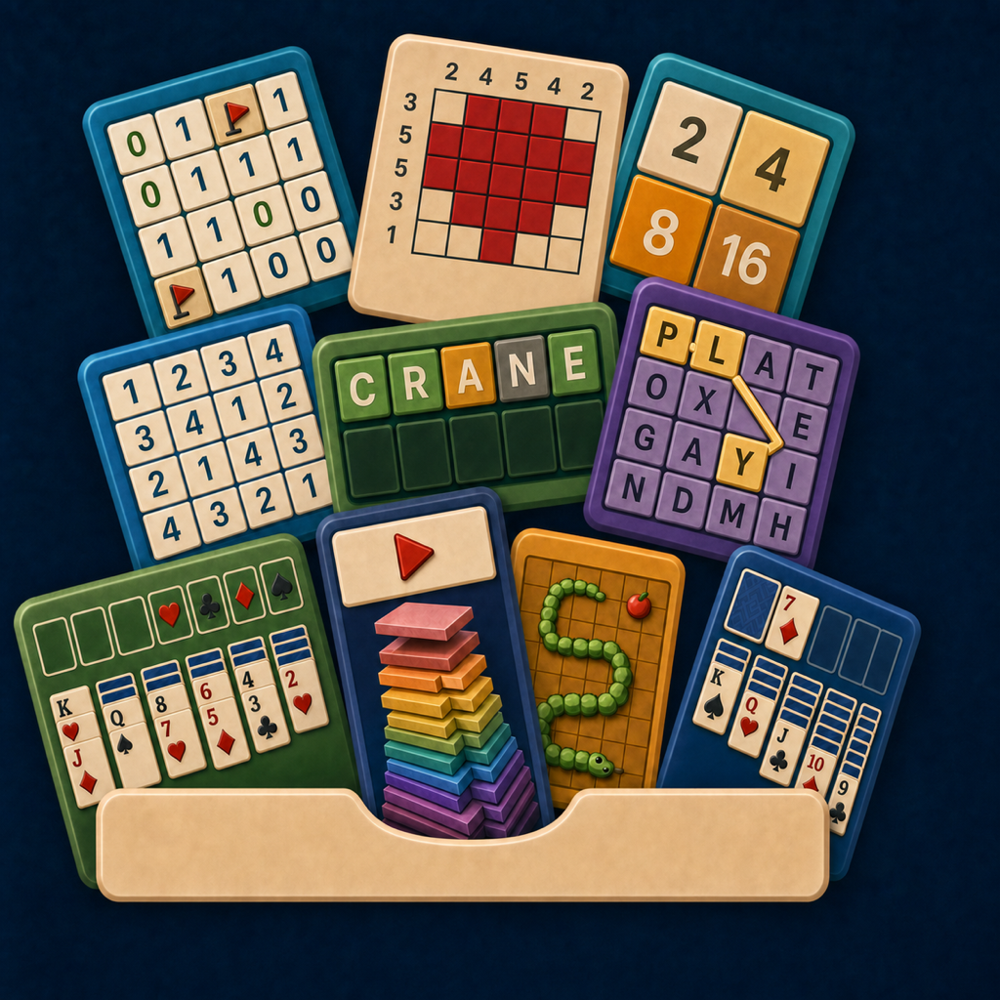
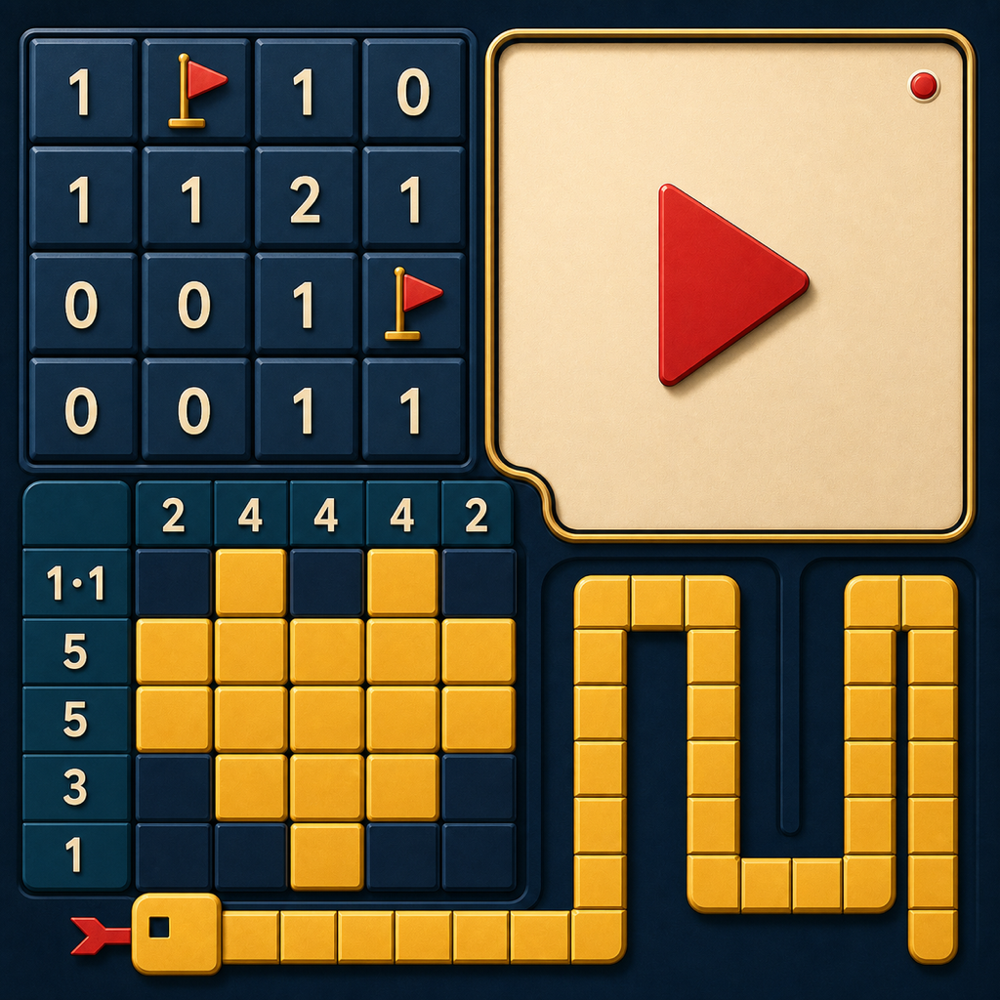

9A.2 · Current icon
Video drawer
The selected app icon: four strong panels, a clear drawer metaphor, and immediate small-scale recognition.
One literal drawer, one compact drawer, and two full-bleed systems. 9A.3R-B now bursts all ten current games from a symmetric drawer, with logically valid boards and Video Mode integrated into Stack.
The selected app icon: four strong panels, a clear drawer metaphor, and immediate small-scale recognition.

All ten games erupt at varied angles, with valid puzzle states and an accurate Stack tower reflowed for Video Mode.

A cream ribbon unifies four mechanics around a central viewing aperture in the strongest abstract direction.

A full-bleed system where games and viewing space share one disciplined, high-contrast composition.